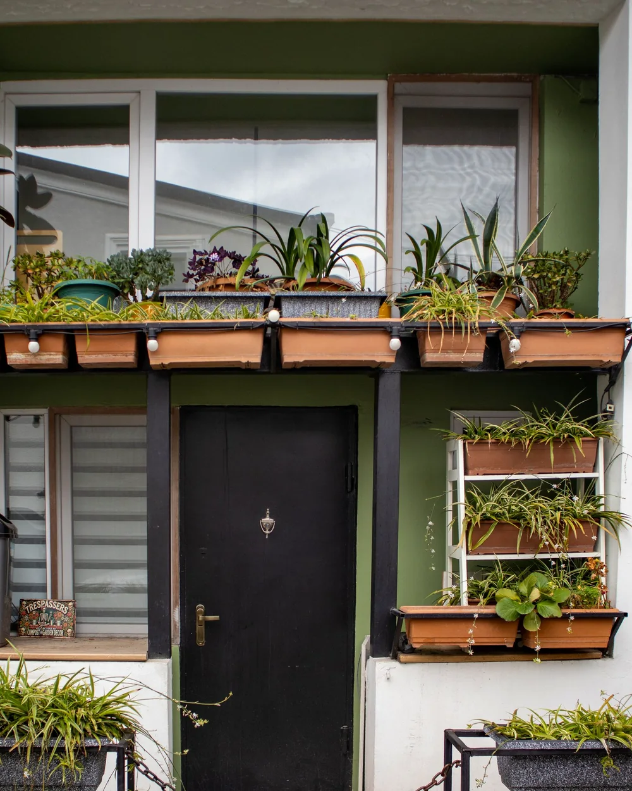
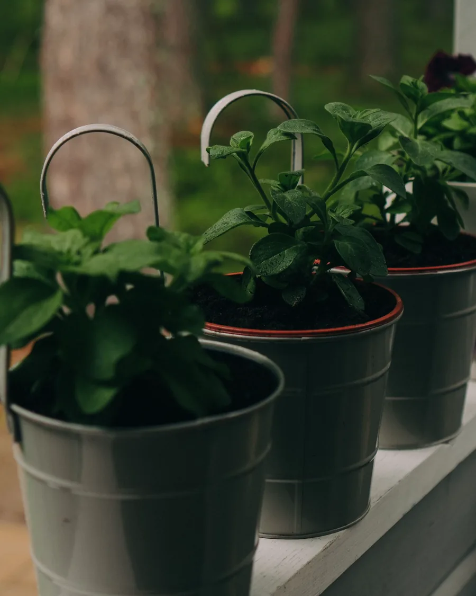

Grow the light you have
Watch your space for a day before you buy a plant. The sunniest spot wins.
The city gardener's field guide Vol. 01
A practical guide to growing food and greenery in flats, balconies and borrowed corners of the city. No backyard required.

01 / The why
A city garden is not a smaller version of a country garden. It is its own strange, generous thing.

One windowsill, three herbs, zero excuses.
Borrowed light, tight corners, pots that dry fast and neighbours who absolutely notice. City growing has its own rules.
GardenWow is a field guide for that reality. Less Pinterest perfection, more “the basil made it through the week.” Everything here is built for small spaces, real schedules and the particular joy of eating something you grew outside a window.
Watch your space for a day before you buy a plant. The sunniest spot wins.
A finger in the soil beats a watering schedule. Dry 3 cm down? Water.
Three pots tended well beat twenty abandoned on a ledge.
02 / The field guide
Skip the shelf of half-read gardening books. These are the fundamentals that matter in a city — and the small moves that make them real.
You can fix almost anything in a pot except the wrong light. Watch your space at 9am, noon and 4pm. Note which spots get direct sun, which get bright reflected light, and which never leave the shade.
Tape a paper marker to your sunniest window for a day. That is your growing HQ.
Rooftop pots can dry in a day; monsoon balconies can stay damp for a week. Push a finger 3 cm into the soil. Dry? Water slowly until it drains. Damp? Walk away.
Lift the pot. A noticeably light pot is a thirsty pot.
Garden soil in a pot becomes a brick. Start with a loose potting mix, then add compost for food and perlite for air. Roots need oxygen as much as they need water.
A simple mix: 60% potting mix, 30% compost, 10% perlite.
Pretty pots without drainage are plant-sized bathtubs. Choose at least one drainage hole, a pot 2–3 cm wider than the root ball, and a saucer you actually empty.
Raise pots on pebbles or feet so water never pools underneath.
Potted plants are captive diners — they cannot send roots into the neighbour's garden. Feed at half strength through the growing season, then ease off when growth slows.
Feed every second watering in spring and summer. Not every day.
City gardens are never “done.” Each season brings a different job: shade cloth in May, drainage checks in July, a hard prune before winter. Work with the year, not against it.
At every season change, remove dead growth and top up 2 cm of compost.
03 / Plant match
Tell us about your light, your space and how much you like to fuss. We will match you with three plants that stand a real chance.
Your three best bets
—
A starting point, not a guarantee. Every windowsill has its own microclimate — watch what your plant tells you.
04 / The city calendar
Built for a warm, monsoon-driven year. Your city may run a few weeks ahead or behind — watch your plants, not just the calendar.
01
Everything wakes up. Growth is fast, the light is kind, and pest pressure is still low. This is the season to be ambitious.
City note East-facing balconies are gold in spring. Give tomatoes their biggest pot now — they hate being moved later.
02
The test. Pots dry fast, afternoon sun is brutal, and water can evaporate before it reaches the roots. Shade and mulch are your friends.
City note On a hot rooftop, the shaded side of a wall can be 5°C cooler. Add a saucer — but never let roots sit in water overnight.
03
Free water, dramatic skies and the fastest way to lose a plant to root rot. This is drainage season, not watering season.
City note A covered balcony may need less water than you think. Stick to the finger test even when the sky is doing its thing.
04
The sweet spot. Cooler nights, softer sun and happy roots. In many Indian cities, this is the best growing window of the year.
City note Use the mild weather to move heavy pots and check balcony waterproofing — not after the first winter rain.
05
Slow growth, clean air and a garden that asks for less. Protect tropical plants, cut back on water and let the year rest.
City note Indoor plants near heaters need more humidity, not more water. Group them together and keep leaves clean.
05 / The weekly reset
The garden doesn't need you to be perfect. It needs you to show up. This short Sunday routine catches most problems before they become a whole thing.
15 minutesLess time than one scroll hole.
Sunday reset
Progress saves on this device. No account needed.
06 / Common questions
Still stuck? Send us a photo of the crime scene. We are nice about it.
hello@gardenwow.coYes — but choose for shade, not hope. Snake plant, ZZ plant, pothos and peace lily tolerate low light. They will grow more slowly and need less water. If you want herbs or vegetables, you will need a grow light or a brighter spot.
There is no universal schedule. Check 3 cm down. In summer, a small balcony pot may need water daily; in monsoon, twice a week may be plenty. When in doubt, check the soil. When in real doubt, wait a day.
Aloe, jade, bougainvillea, marigold, chilli, curry leaf and most succulents handle it well. Use shade cloth or move pots behind a wall between noon and 4pm in peak summer. Even sun-lovers appreciate a break from reflected heat.
Keep pots within your building's load limits, never hang weight over a railing without professional advice, secure pots against wind, and check the rules and waterproofing. Saucers and drainage matter more than aesthetics. When in doubt, ask someone qualified — not the internet.
Mint, basil, spring onion, coriander and lettuce. Buy a healthy seedling rather than seed if you want a quick win. Give mint its own pot — it is wonderful and absolutely relentless.
Yes to potting mix (not garden soil), compost, and a balanced liquid feed. You do not need a shelf of products. A loose mix, proper drainage and half-strength feed get you most of the way.
Fungus gnats usually mean damp soil and rich organic matter. Let the top 3 cm dry out, empty the saucers, and use yellow sticky traps to break the cycle. For persistent infestations, a Bti-based product can help — follow the label.
Choose forgiving plants: snake plant, ZZ plant, succulents or established herbs. Group pots in shade, water deeply before you leave, and skip complicated self-watering gadgets until you have tested them. A neighbour with a key is still the best technology.
Ready when you are
Start with one pot, one windowsill, one small experiment. The rest is just showing up.
No email. No signup. Just start.